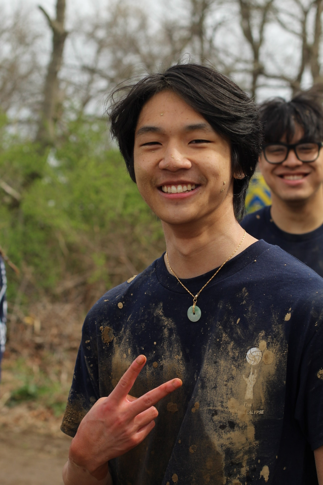
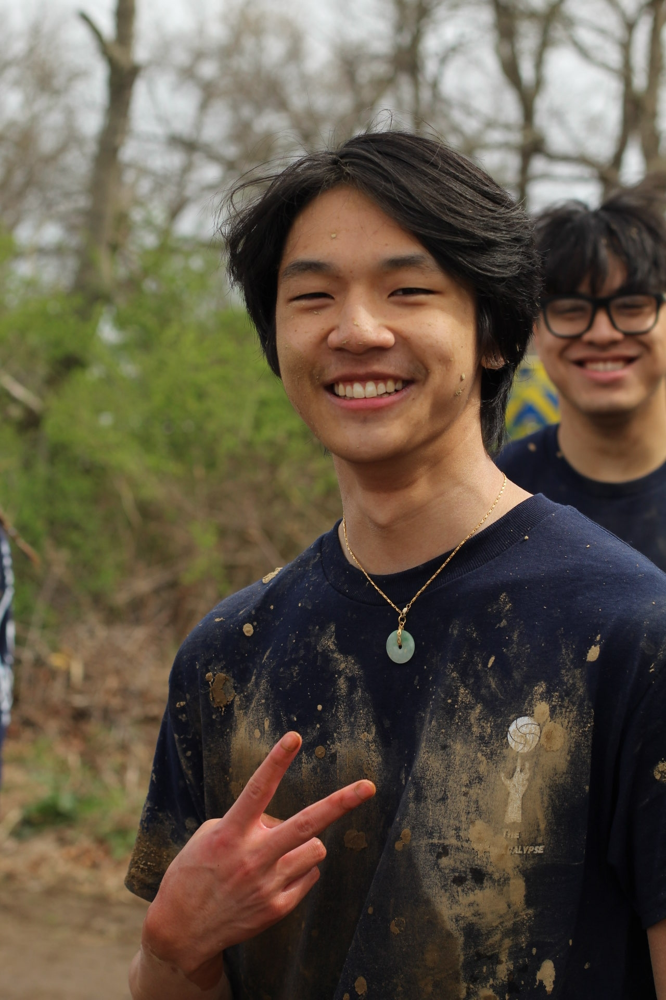

Hello my name is Ryan. I am a sophmore attending The University of Rhode Island.
I am going for Computer Engineering as my major with a computer science minor.
I am excited to finally start classes that are specific to my major and will prepare me for my future career.
Althoguh it will be a difficult journey, it'll be worth it in the end.
 
I also love to spend time with friends in and out of school.
No matter what activity we end up doing, I enjoy it all!
For a sport I love to play would be volleyball.
Especially going out to concerts and listening to muisc as a group is something I really enjoy.
Once I get my own high quality camera, I would really like to go out and take pictures where ever I can.

I also love to spend time with friends in and out of school.
No matter what activity we end up doing, I enjoy it all!
For a sport I love to play would be volleyball.
Especially going out to concerts and listening to muisc as a group is something I really enjoy.
Once I get my own high quality camera, I would really like to go out and take pictures where ever I can.
I'm glad that joined the ASA (asian student association) as a freshman at URI.
I was able to become friends with amazing people who make me look foward to going to college.
One of the URI Events that I particiapted in was Oozeball (photo to the right) with my friends.
I was hestiant at first because it was volleyball in mud but I'm glad I did it. It was an abosute blast!